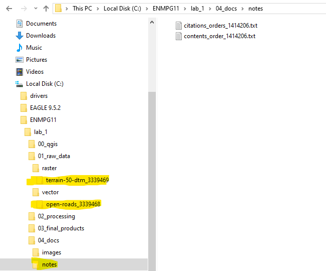
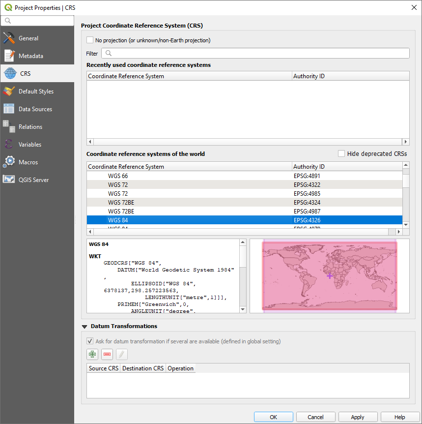

2 Lab 1 - QGIS overview and file management
2.1 Guided Exercise 1 - A simple GIS workflow
The purpose of this exercise is to give you a general overview of proper GIS workflow, from start to end. Throughout the module, your exercises and projects wil become more complex, but the general workflow will not change. Getting used to having proper project and file management habits from the start is the best thing you can learn. Speaking as someone whi has been teaching and working with Geomatics for more than a decade, poor file/project managemnt is the underlying cause of at least 50% of the GIS problems you may encounter.
2.1.1 1 - Creating a project structure
GIS projects generate a lot of different files quickly, so project organization is essential. The steps below are my suggestion for organizing GIS projects files and associated data. Once you get comfortable managing your own projects, feel free to change the proposed structure to something that best suits your own workflow.
- Create a folder on your computer called
ENMPG11, off of the main data drive. For Windows, this will beC:in most cases, unless you have separate disk drives. For Linux and Mac, create it on youhomedrive.
Windows C:

mac OS home

Ubuntu home
Inside the ENPG11 folder, create a subfolder called
lab_1Inside
lab_1, create the following folder structure:

This is the most “barebones” project structure you can have. The folders will bee used as follows:
00_qgis: we will use this folder to save our QGIS project files.01_raw_data: this folder will keep all the original data files you are working with. This way you can always go back to the start if something goes wrong. We use the subfoldrrsvectorandrasterto easily know which data type we are working with. You should create additional subfolders inside each folder to keep things organized as you go.02_processing: here we will keep all th files you generate as part of your work. Make ample use of subfolders to identify each step of the workflow.03_final_products: here we will keep the final products of our intended analysis. This makes it easy for us to find the latest version of our intended outputs, without risking using intremediate files instead04_docs: here we will keep all our non-GIS files. In thenotesfolder, you can keep a simple text file documenting the project steps as you work in it. You can also keeo important referece images here. Inimages, you can save any image that illustrates the steps you made, or maps you have produced. You can add other subfolders such asreportif you are writing a report about your project, and keep the report file in there.
- Organize the data you’ve downloaded previosuly during the instructor-led QGIS exploration into your projec folder. The terrain data folder goes into
raster, the roads data goes intovector, and the.txtmetadata files go intodocs/notes. You can keep the data into the originalfolders they came in, for easy identification:

2.1.2 2 - Creating a QGIS project
A QGIS project is an index file that will remember all the data layers you have loaded, their stacking order, the styling of each layer, and some other information, such as a default map projection and datum. It will also keep any map layouts that you create.
- Create a new project in QGIS by clicking on
Project > New...or pressing Ctrl-N:

Add the layers
NS_RoadLink.shpandNS89.ascfrom your organized project folder (terrain and roads) to your project.Save your project. Click on the Save button and give your project a name, nd save it on
ENMPG11/lab_1/00_qgis.Open the project settings by clicking on
Project > Properties.... You will see this window:
 - The main thing to set on your new project are the project home folder, the base map projection info and the measurement units.
For the project home on the
Generaltab, select thelab_1folder. This helps navigating when opening and saving data.For measurement units, make sure distance units are set in meters, and area units in squared meters, also on the
Generaltab.For base projection, go to the
CRStab and search for OSGB 1936 British National Grid, identified by the EPSG code 7405. EPSG stands for “European Petroleum Survey Group”, and designates a parameter database with standard codes for geodesic information. Over time, you will propbably memorize the EPSG codes for the projections you use more often, making it easy to search for Select it by clicking on it.Save your project by clicking on the Save button, or going to
Project > Save, or by typingCtrl+Ssimultaneously.
2.1.3 3. Styling your layers and producing a simple map
Select the
NS89layer on the Layers side panel, and drag it to the bottom if not already.Turn the roads layer off for now.
Right-click on the layer name and choose
Rename layer. Rename it toDigital Elevation Model (50m). Open the file exlplorer in your system, and look for theNS89.ascfile you have saved before.
Stop and think: wil changing a layer name in the layer panel also change the name of the source data file for that layer?
Right clik on the terrain layer and choose
Zoom to Layer. This is always a handy tool to “find yourself” if you end up zooming or panning the map too far. Pick a layer that covers most of your intended work area and zoom to it. (Advanced: you can also set a Spatial Bookmark by going toView > New Spatial Bookmark...(Ctrl + B). You bookmarks will show on your Browser side panel, below your Favorites).Right click on the terrain layer name and select
Properties..., then go to theSymbologytab. SelectRendering typeto beSingle Band Pseudocolor, andColor Rampasspectral. Click again on the down arrow button to the right of theColor Rampbox, and selectInvert Color Ramp, so that the minimum heights are colored blue. Then clickOk. Save your project.Rename the
NS_RoadLinklayer toRoad Network. Go to its Symbology properties and click onSimple Line. Change the line color to a mid-grey, and the line width to 0.3. ClickOk. Reactivate the layer to visualise it.Go to the
Vectormenu and selectResearch Tools > Extract Layer Extent.... Select the terrain layer as yourInput layer, and clickRunto generate a temporary layer. This layer will not be kept once you close QGIS, unless you save it manually later. The window will not close automatically once you run, so remember to click onClosewhen you are done.Go to
Vector > Geoprocessing Tools > Clip.... Select the roads layer as theInput Layerand the new temporary layer as theOverlay Layer. This time, we will save the output. Click on the...button to tle right of theClippedbox, and then chooseSave to file. Save your new layer onENMPG11/lab_1/procs=essing, naming itclipped_roads.shp. Make sure theSHP fileformat is selected below the file name.Tur off the original roads layer on and off to see the result of your operation. Then right-click on the original roads layer, and select
Styles > Copy Style > All Style Categories. Then right click on the new (clipped) roads layer and select `Styles > Paste Style > All Style Categories. Remove the original roads layer from your project and save the project. Close QGIS. Stop and think: what does the warning given by QGIS when you try to close it means?Reopen QGIS, and load back your project. Notice it is exaclty as you last saved, including zoom level. If the “Extent” layer still shows on the side panel, remove it.
Click on
Project > New Map Layoutand name itLab 1 Layout. A new window will open with the QGIS Layout Editor.Add a new map to the layout by clicking on the
 icon. Drag it through the page so it covers about 2/3 of it horizontally.
icon. Drag it through the page so it covers about 2/3 of it horizontally.